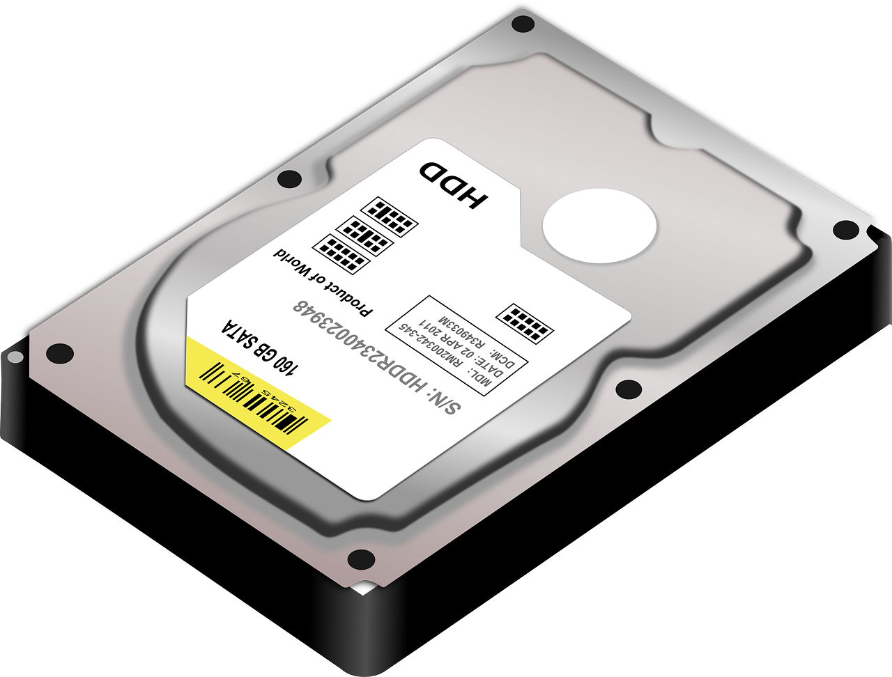

Vad är en Hårdisk?
Din dators hårddisk är det som lagrar och hämtar digital information i en dator eller andra elektroniska föremål. Idag finns det två olika hårddiskar, hdd och ssd. Hdd är äldre än ssd men används idag inte lika ofta eftersom ssd är snabbare och kan därför processera och hämta information snabbare som bland annat gör så att din dator startar upp snabbare samt tar de mindre tid att överföra bits av infromation. Hårddiskars kapacitet mätter vi idag i TB eller GB. Även om vissa datorer har en inbyggd hårddsisk i moderkortet så rymmer dena hårddisken knappt någonting och om du därför ska ladda ned programvaror, osv på din dator behöver du en hårddisk.
Startsida
